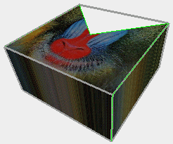
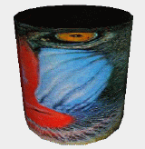

| vfr - Volflex rendering API - |
class vfrTexture
Class Hierarchy
Header files
- #include "vfrTexture.h"
Definitions
- vfrTexture(const vector3* tbb =NULL,
const Bool sm =FALSE)
- デフォルトコンストラクタ(空のvfrTextureオブジェクトを作成する)
- tbb バウンディングボックス
- sm 自己破壊モード
- vfrTexture(const vfrImage& img,
const vector3* tbb =NULL,
const Bool sm =FALSE)
- イメージを指定したコンストラクタ
- img イメージデータ
- tbb バウンディングボックス
- sm 自己破壊モード
- vfrTexture(const vfrTexture& org,
const vector3* tbb =NULL,
const Bool sm =FALSE)
- コピーコンストラクタ
- org コピー元のvfrTextureオブジェクト
- tbb バウンディングボックス
- sm 自己破壊モード
- virtual ~vfrTexture()
- vfrTextureオブジェクトを破壊する。
public methods / variables
- void operator =(const vfrTexture& org)
- 代入オペレータ
- vfrImage& getImage()
- イメージを返す
- void setImage(const vfrImage& img)
- イメージを設定する
- img イメージデータ
- vfrTexture::MapType getMapType() const
- テクスチャマッピングのタイプを返す
- void setMapType(const vfrTexture::MapType mt)
- テクスチャマッピングのタイプを設定する
- mt マッピングタイプ(デフォルト: XYP)
- vfrTexture::ClipType getClipType() const
- テクスチャのクリッピングタイプを返す
- void setClipType(const vfrTexture::ClipType ct)
- テクスチャのクリッピングタイプを設定する
- ct クリッピングタイプ(デフォルト: REPEAT)
- Bool alcUVCs(const int nv)
- テクスチャ座標の格納領域を確保する
- nv 確保するテクスチャ座標数
- Bool setUVCs(const int nv, const vector2* v)
- テクスチャ座標の格納領域を確保し、値を設定する
- nv テクスチャ座標数
- v テクスチャ座標(nv個)
- Bool setUVC(const int n, const vector2 v)
- 1つのテクスチャ座標を置き換える
- n テクスチャ座標番号
- v n番目のテクスチャ座標値
- vector2* getUVCs()
- 登録されているテクスチャ座標領域へのポインタを返す
- Bool getUVC(const int n, vector2& v) const
- 指定された番号のテクスチャ座標を取得する
- n テクスチャ座標番号
- v テクスチャ座標格納領域
- int getNumUVCs() const
- 登録されているテクスチャ座標数を返す
- void setBbox(const vector3* tbb)
- バウンディングボックスを登録する。
バウンディングボックスが登録されていない場合、
最初にテクスチャ登録された
オブジェクトのバウンディングボックスが参照される。
- tbb バウンディングボックスデータ(vector3[2])
- vector3* getBbox() const
- 登録されているバウンディングボックスを返す。
バウンディングボックスが登録されていない場合、
最初にテクスチャ登録された
オブジェクトのバウンディングボックスが参照される。
- unsigned int getID() const
- テクスチャインスタンスIDを返す
- static void GetCylUVC(
const vector3 bb[2],
const vector3 p,
vector2 uv[3])
- 三角形に対するCylindericalマッピングのテクスチャ座標を計算する(スタティックメソッド)
- bb バウンディングボックスの頂点
- p 三角形の頂点座標
- uv 三角形の頂点のテクスチャ座標格納領域
Description
vfrTextureクラスは、オブジェクトに対する
テクスチャマッピング機能を実装するクラスである。
オブジェクトにマッピングをする場合、マッピングするイメージを元にしたvfrTextureオブジェクトを
インスタンスし、対象オブジェクトのsetTexture()
メソッドを用いて関連付けを行う。
Mapping Type
テクスチャマッピングは、設定されているマッピングタイプに応じて、
以下のように行われる。
- vfrTexture::NOMAP
テクスチャマッピングは行われない。
- vfrTexture::XYP, vfrTexture::YZP, vfrTexture::ZXP
それぞれXY平面、YZ平面、ZX平面に、オブジェクトの頂点を正射影した座標値を
テクスチャ座標として使用する。
この時、オブジェクトのバウンディングボックスにフィットするように、
テクスチャはスケーリングされる。

Fig.1 XYPlane mapping type
- vfrTexture::CYL
オブジェクト座標系のY軸を中心軸に、X軸方向を回転角0とする円筒面に沿って
テクスチャマッピングを行う。

Fig.2 CYLINDER mapping type
- vfrTexture::UVC
vfrTextureインスタンスに登録されているテクスチャ座標を
参照して、テクスチャマッピングを行う。
幾何変換行列が設定されていれば、テクスチャ座標には
この行列による幾何変換が適用される。
テクスチャ座標は、親オブジェクトに登録されている頂点座標
と同じ順序で格納されているものとして扱われる。